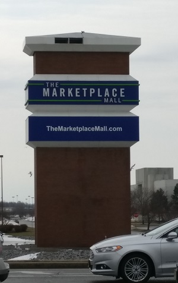

Marketplace Mall
Marketplace Mall is the largest nearby shopping center to RIT. An indoor mall, Marketplace Mall has a solid selection of items and stores available. The food court is of okay, if not spectacular quality. Many chains common to malls are within Marketplace Mall. It's not a spectacular mall, but there also doesn't happen to be much wrong with it.
Marketplace Mall also houses a go-karting track and a Dave and Buster's for solid recreation options. Additionally, Dave and Buster's has half-price games on Wedesdays.
Marketplace Mall is accessible daily via the RTS 24 bus route, or on the weekends via the free RIT Weekend Shuttle.